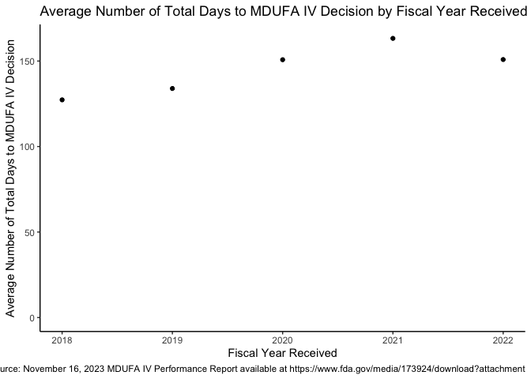

This package includes structured data from the FDA’s quarterly Medical Device User Fee Amendments (MDUFA) programs, which are published as PDFs on fda.gov. The package includes functions to scrape those PDFs to extract the data and includes the most recent dataset as of publication.
The extraction process has been verified using stratified random sampling with manual verification against the source PDFs. However, PDF text extraction is inherently imperfect and errors may exist. Use this information at your own risk and verify critical data points using the reports provided directly by FDA. To facilitate this, each data point includes source metadata: the FDA report link, page number, table number, and organization.
“Text” metrics (typically performance goal descriptions like “90% Within 320 FDA Days”) are more prone to extraction errors because they break across lines within table cells. Footnotes are intentionally excluded from the dataset.
If you find a problem in this dataset, please report it here.
Please carefully read the license for additional important information.
Installation
Install the development version from GitHub with:
# install.packages("devtools")
devtools::install_github("bjoleary/mdufa")Examples
You can access data from MDUFA 3 using mdufa::mdufa3:
library(mdufa)
library(dplyr)
#>
#> Attaching package: 'dplyr'
#> The following objects are masked from 'package:stats':
#>
#> filter, lag
#> The following objects are masked from 'package:base':
#>
#> intersect, setdiff, setequal, union
set.seed(1)
mdufa::mdufa3 %>%
select(organization, program, metric_type, performance_metric, fy, value) %>%
sample_n(5) %>%
print()
#> # A tibble: 5 × 6
#> organization program metric_type performance_metric fy value
#> <chr> <chr> <chr> <chr> <chr> <chr>
#> 1 DSD PMA double Mean industry days for submissio… 2017 0
#> 2 DCTD 510(k) integer 510(k) pending MDUFA III Decisio… 2015 0
#> 3 OIR 510(k) integer Number Not Accepted 2016 92
#> 4 DMD PMA percent Current SI Performance Percent G… 2014 100%
#> 5 DRGUD PMA integer 60th Percentile FDA days to MDUF… 2017 176Data from MDUFA 5 is available using mdufa::mdufa5. MDUFA 4 is also available using mdufa::mdufa4 and data from MDUFA 2 is available using mdufa::mdufa2.
Metrics can be assessed and graphed over time:
library(ggplot2)
data <-
mdufa::mdufa4 %>%
mdufa::filter_metrics("double") %>%
filter(
report_date == max(report_date),
organization == "CDRH",
program == "510(k)",
performance_metric == "Average Number of Total Days to MDUFA IV Decision"
) %>%
dplyr::mutate(
fy = as.integer(fy)
)
graph_title <-
paste(data$performance_metric %>% unique(), "by Fiscal Year Received")
x_label <- "Fiscal Year Received"
y_label <- data$performance_metric %>% unique()
graph_caption <-
paste0(
"Source: ",
data$report_description %>% unique(),
" available at ",
data$report_link %>% unique()
)
graph <-
ggplot(
data = data,
mapping =
aes(
x = fy,
y = value
)
) +
geom_point() +
theme_classic() +
scale_y_continuous(limits = c(0, NA)) +
labs(
title = graph_title,
y = y_label,
x = x_label,
caption = graph_caption
)
plot(graph)
Exporting the data
In many cases, you may wish to locally save the data from a MDUFA report into a commonly used format, such as excel. This can be accomplished using the data already included in the package:
mdufa::export_excel(
data = mdufa::mdufa4,
filepath = "mdufa4_quarterly_performance.xlsx"
)Extracting data from PDF reports
You can extract data directly from MDUFA PDF reports using extract_report():
# Extract from a local PDF file
data <- mdufa::extract_report(
pdf_path = "path/to/mdufa-4_2023-11-16.pdf",
mdufa_period = "MDUFA IV"
)
# Or from a URL
data <- mdufa::extract_report(
pdf_path = "https://www.fda.gov/media/...",
mdufa_period = "MDUFA V"
)This function supports MDUFA III, IV, and V report formats.
Building the datasets for yourself
Code to build the datasets for yourself can be found in data-raw/.